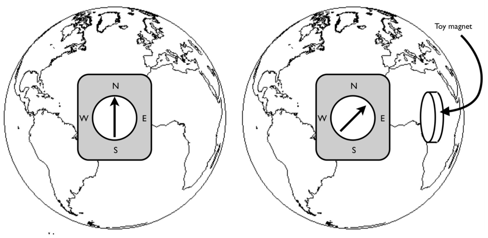

The focus on this tutorial is to develop an understanding of the concept of bound currents.
(AMS 1: Comments on this tutorial from University of Colorado - Boulder: This is a particularly strong tutorial. There was a constant hum of discussion, all the students seemed engaged and interested, and misconceptions were resolved. This tutorial had a point, an end goal (to estimate the bound current). In the process of achieving that goal, many relevant topics came up, like magnetic dipoles and bound current. The activity seemed to flow very well. Part 1 This section took students about 40 minutes to complete. At this point in the semester, students should have developed some ability to question implicit assumptions. In question (i) two students asked how we know that the flat sides of the magnet are the poles (rather than the curved ends), and then checked it with a compass. Questions (i)-(iv) are a simple warmup, and makes the point that the geographic north pole is not the same as the magnetic north pole, which is clarifying for a few students. In question (v), most students drew pictures of little currents canceling out inside the magnet. One group wondered why the field is uniform inside a magnet, and argued that the currents wouldn’t cancel inside the magnet if this were not the case. The instructor pointed out to students that these drawings of currents were of electrons orbiting the nuclei, but that the drawings could also represent electron “spin current” (which is actually the dominant effect). Some groups discussed the direction of the magnetic dipole orientation – the instructor noted that the small dipoles will orient in the same direction as the overall dipole field of the magnet. Almost every student was confused by the definition of theta in the equation for B of a dipole in question (vi). Some thought this was the angle that the compass needle was deflected, and others thought it was the angle relative to magnetic north. The instructor helped them to resolve this by drawing a current loop (magnetic dipole), sketching its field (which students were familiar with) and identifying theta in order to make the equation match their sketch of the B field. Students had some troubles figuring out what to do with the ruler in order to estimate m (perpendicular to North gives the best estimate). The other difficulty was that students did not realize that the B-field from the magnet would equal the B-field of Earth when everything is aligned as in Figure 2. One group noticed that the bound current on the outside of the doughnut-shaped magnet flows the opposite direction of the bound current inside the hole. The math of the cross-products for this question should agree with the model and sketch of atomic current in question (iv), and students can be encouraged to make this connection. In the end, each group came to a similar estimate for I (which is similar to our estimate) of 1000-2000 A.)
You know that currents create magnetic fields, but how much current does it take? You now have all the tools to estimate the bound current of an everyday toy magnet.
a) A compass needle is a magnet, and the arrow represents its north pole. If the compass needle (on a compass on the surface of the earth) is attracted towards the Earth as shown in Fig. 1, label the magnetic poles of the Earth (“N” or “S”).
b) Which direction is the current flowing inside the Earth? Label it with arrows.
c) If the compass needle deflects as shown in Fig. 1, which pole of the toy magnet is closer to the compass? Label it (“N” or “S”).
d) Which direction is current flowing on/in the toy magnet? Label it with arrows.
Figure 1: Toy compass and the Earth.

e) Before you start estimating the bound currents of the toy magnet, do you expect there to be a bound surface current, bound volume current, or both? Sketch the atomic currents in the magnet below to illustrate your claim.
f) With your compass and toy magnet (and the Earth) oriented as shown in Figure 2, estimate the magnetic moment, \( m \). You should use a meter stick. The following information may be useful: $$ \begin{equation} \vec{B}_{dip}(r) = \frac{\mu_0 |\vec{m}|}{4 \pi r^3} \left( 2\cos \theta \, \hat{r} + \sin \theta \, \hat{\theta} \right) \, \qquad \, \mu_0 = 4 \pi \times 10^{-7} \text{Tm/A} \tag{1} \end{equation} $$ The Earth's magnetic field is about \( 5\times 10^{-5} \text{T} \).
g) Now you can find M, the magnetic dipole moment per unit volume.
h) Estimate the bound current, \( I_b \).